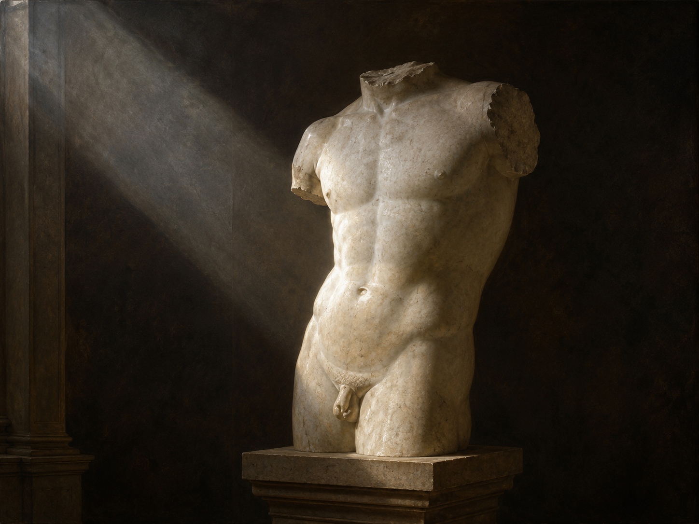

Wir kannten nicht sein unerhörtes Haupt,
unerhört 字面为"未被听见的"，引申义有二："闻所未闻的、惊人的"与"骇人听闻的"。里尔克在此利用了字面义与引申义的双关——那颗头颅既"从未被我们见闻"，又"惊人非凡"。Haupt 是 Kopf 的雅语形式，专用于庄严语境。全诗以第一人称复数 wir 开场，最后一行却突转为 du，是理解全诗结构的关键。
古风的阿波罗躯干残像
《新诗集·别集》（Der neuen Gedichte anderer Teil, 1908）开篇之作
现代主义早期 / 里尔克"物诗"（Dinggedicht）时期
1908年夏于巴黎写成，1908年11月出版

图片由 AI 生成
Wir kannten nicht sein unerhörtes Haupt,
unerhört 字面为"未被听见的"，引申义有二："闻所未闻的、惊人的"与"骇人听闻的"。里尔克在此利用了字面义与引申义的双关——那颗头颅既"从未被我们见闻"，又"惊人非凡"。Haupt 是 Kopf 的雅语形式，专用于庄严语境。全诗以第一人称复数 wir 开场，最后一行却突转为 du，是理解全诗结构的关键。
darin die Augenäpfel reiften. Aber
Augenapfel（眼球，字面"眼之苹果"）是罕见的雅语词，与动词 reifen（成熟，本用于果实）构成一个统一的果园隐喻：眼珠像果实一样在头颅中"成熟"。此行句号落在行中（Zeilenstil 被打破），随后一个孤零零的 Aber 悬在行末——跨行连写（Enjambement）在本诗中几乎每行都出现，是全诗紧张感的主要来源。
sein Torso glüht noch wie ein Kandelaber,
der Torso（意大利语借词，指无头无肢的躯干雕像）是全诗的主角。Kandelaber（多枝烛台）这一比喻把失去头部的石像转喻为一件仍在发光的器物——光源本应在头（眼睛），如今被"拧回"躯干内部。
in dem sein Schauen, nur zurückgeschraubt,
das Schauen 是动词 schauen（观看）的名词化，指"凝视这一行为"本身，而非 der Blick（目光）。zurückschrauben 字面为"把（灯芯）拧回去、调小"，延续 Kandelaber 的煤气灯／油灯意象：凝视没有消失，只是被调暗、收回内部。
sich hält und glänzt. Sonst könnte nicht der Bug
sich halten 意为"维持自身、存续"。此后 Sonst（否则）引出全诗第一个虚拟推论："若不是这样，……便不可能……"。der Bug 本义为船首（也指关节、弯曲处），此处指胸膛向前的隆起弧线，一个海船与身体重叠的隐喻。
der Lenden könnte nicht ein Lächeln gehen
die Lenden（腰、腰胯部）是解剖学与《圣经》语汇（"腰间之力"）共用的词。"微笑走向"（ein Lächeln gehen zu）是全诗最大胆的转喻：微笑本属面部，而这尊像没有脸，于是微笑被移到躯体的扭转之中。
zu jener Mitte, die die Zeugung trug.
die Zeugung（生殖、生育）与 tragen（承载）连用，指雕像的生殖部位。里尔克在此并不作情色描写，而是把生殖力理解为造型艺术的生命力本身；这也是罗丹"一切都在动"的雕塑观在诗中的转写。
Sonst stünde dieser Stein entstellt und kurz
第二个 Sonst 引出的虚拟句，动词用第二虚拟式 stünde（stehen 的第二虚拟式，亦作 stände）。entstellt（被毁容的、扭曲的）与 kurz（短的）合起来描写残缺石块若没有内在辉光时会呈现的样子——不过是块断石。
unter der Schultern durchsichtigem Sturz
语序需要还原：unter [der Schultern] [durchsichtigem Sturz] = "在双肩那透明的垂落之下"，der Schultern 为前置的第二格。der Sturz 兼有"坠落"与建筑术语"门楣、过梁"两义，里尔克很可能同时激活了这两层：肩部既如垂落的形体，又如支撑起整座建筑的横梁。
und flimmerte nicht so wie Raubtierfelle;
flimmern（闪烁、微微颤动的光）用于形容大理石表面在光下的质感；Raubtierfelle（猛兽的毛皮）把静止的石头与野兽的活体感官联系起来。行末标点在不同版本中作分号或中圆点（·），详见校对记录。
und bräche nicht aus allen seinen Rändern
bräche 是 brechen 的第二虚拟式；可分动词 ausbrechen 的前缀 aus 被推到下一行行首（"aus wie ein Stern"），这是全诗最极端的一次跨行——语法上的"迸裂"与语义上的"迸射如星"完全同步。
die dich nicht sieht. Du mußt dein Leben ändern.
全诗的翻转：被观看的雕像成了观看者，读者从旁观的 wir 变成被凝视的 du。末句是德语诗歌中最著名的句子之一，其力量正来自它的突兀——没有任何过渡、没有任何解释。mußt 为旧正字法（今作 musst）。
| Infinitiv | Präsens 3. Sg. |
Präteritum | Perfekt | Partizip II | Konjunktiv II | Hilfsverb |
|---|---|---|---|---|---|---|
| kennen | kennt | kannte | hat gekannt | gekannt | kennte | haben |
| ↳ 混合变化动词；诗中用过去时复数 kannten（"Wir kannten nicht …"）。 | ||||||
| reifen | reift | reifte | ist gereift | gereift | reifte | sein（表状态变化） |
| ↳ 指果实成熟或人的成熟；诗中用过去时复数 reiften。 | ||||||
| können | kann | konnte | hat gekonnt | gekonnt / können | könnte | haben |
| ↳ 诗中两次使用第二虚拟式 könnte，构成"若非如此便不可能"的反事实推论。 | ||||||
| stehen | steht | stand | hat gestanden | gestanden | stünde / stände | haben |
| ↳ 诗中用第二虚拟式 stünde（南德与文学语体偏好 stünde，北德口语多用 stände）。 | ||||||
| ausbrechen | bricht aus | brach aus | ist ausgebrochen | ausgebrochen | bräche aus | sein |
| ↳ 可分动词；诗中第二虚拟式 bräche…aus 被跨行拆开（bräche 在第12行末、aus 在第13行首）。 | ||||||
| müssen | muss | musste | hat gemusst | gemusst | müsste | haben |
| ↳ 诗中第二人称单数 mußt（旧正字法，今 musst），构成全诗最后一句的绝对命令。 | ||||||
| ändern | ändert | änderte | hat geändert | geändert | änderte | haben |
| ↳ 及物动词；与反身 sich ändern（自身发生改变）区分。末句用及物形式，强调这是"你要主动去做的事"。 | ||||||
Sonst könnte nicht der Bug / der Brust dich blenden … Sonst stünde dieser Stein entstellt und kurz …
und bräche nicht aus allen seinen Rändern / aus wie ein Stern:
unter der Schultern durchsichtigem Sturz
全诗结构：4+4+3+3 行
《古风的阿波罗躯干残像》1908年夏天写于巴黎，是《新诗集·别集》的开篇之作。1905至1906年间里尔克曾任罗丹的秘书，罗丹关于"观看"的训练对他影响极深：他要求自己像雕塑家一样面对对象，让"物"自己说话，而不是抒发面对物时的感受。由此产生的作品被称为"物诗"（Dinggedicht），《豹》（本站编号11）与本诗是其中最著名的两首。
诗中的雕像并无确切原型。学界一般认为里尔克综合了他在卢浮宫见到的希腊古风时期躯干像（如所谓"米利都的阿波罗"）的印象，但诗的重点并不在考古学的准确：他描写的是一件残缺到只剩躯干的作品为何反而比完整的作品更有力量。头部（也就是眼睛所在）的缺失被转化为一个悖论——正因为看不见眼睛，整个石体才成了眼睛："因为这里没有一处／不在看着你。"
末句 "Du mußt dein Leben ändern"（你必须改变你的生活）是德语现代诗中被引用最多的句子之一。哲学家彼得·斯洛特戴克（Peter Sloterdijk）2009年直接以它作为专著《你必须改变你的生活》的书名，用来讨论人类的"操练"（Askese）与自我塑造。在流行文化中，据德语维基百科本词条所引，伍迪·艾伦电影《另一个女人》（Another Woman，1988）亦引用了此诗。这一句之所以有力，恰恰在于它在语法与逻辑上都是"多余"的：前面十三行完成了一次关于艺术品内在光辉的严密推论，末句却突然跳出论证，把结论掷向读者。艺术在此不再是被观赏的对象，而成为一种要求。
中文译文为本站学习译文（AI 辅助），采用直译，重点保留三处：(1) 两组 "Sonst … könnte/stünde nicht …" 的反事实推论链，中文以"否则……不会……"对应；(2) 大量跨行造成的句法断裂，中文尽量以相应位置断句近似传达，但汉语无可分动词，第12—13行 "bräche … / aus" 的断裂无法还原；(3) 末行的突兀感，译文不添加任何连接词或缓冲。另需说明：德语 Schauen（凝视这一行为）与 Blick（目光）有别，译文以"凝视"对应前者。已知此诗存在多个中文译本（如冯至、绿原、林克、陈宁等译者的翻译），因版权原因本站不转载具体译本全文。
德文正文以 Zeno.org 转录的 Insel 版《里尔克全集》第1卷（1955–1966，第555页）为主来源，以 textlog.de 的《新诗集》文本为辅助来源逐词核对，十四行内容、分行与诗节划分完全一致。需说明的差异：(1) 标点：第11行 "…wie Raubtierfelle" 行末，Zeno.org 依全集作分号（;），而部分流通版本（含若干在线选本）作中圆点（·）；本站从全集的分号。(2) 正字法：全集保留旧拼法 "mußt"，1996年正字法改革后应作 "musst"；本站保留原刊旧拼法并在逐行注释中说明。(3) 标题中的 Archaïscher 带分音符（ï），系里尔克原刊写法，现代转录中常被简化为 Archaischer，本站保留原写法，而 slug 与文件名因技术原因使用不带分音符的形式。此外，本站未直接查阅1908年 Insel 初版影印件，上述标点采择依据全集转录，属待进一步核实项。